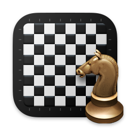

Saat ini, aplikasi tersebut terdiri dari pengalihan antargambar PNG, karena kedua fungsi tersebut memiliki alat ini, bitmap Microsoft yang ada di ICO dan kompresi Apple yang ada di ICNS.

Klik kanan pada gambar akan menampilkan kotak berikut:
Salin - Berarti gambar yang dipilih akan disalin
Tempel - Berarti gambar yang disalin akan ditambahkan
Menggunakan salah satu dari dua metode dalam kotak dialog buka
Dialog buka yang digunakan memiliki dua metode yang sesuai dengan metode buka standar dan metode Java. Pada Windows, metode standar tidak dapat digunakan ketika ada layar dengan resolusi yang berbeda.
Peringatan akan muncul jika Anda mencoba menggunakan opsi "Simpan"
Memberitahukan Anda ketika Anda ingin melakukan operasi Simpan.
Batalkan pilihan "Simpan" jika Anda menggunakan "Simpan Sebagai"
Berkas asli akan dibaca kembali, sama seperti pertama kali.
Menempatkan ikon dalam urutan menurun
Gunakan layar untuk mengatur ikon dari resolusi tertinggi ke terendah.
Memperingatkan jika Anda ingin menyimpan ikon nonstandar
Format ICNS tidak memungkinkan penyimpanan beberapa resolusi. Ketika gagal mendaftarkan resolusi, format tersebut akan mengabaikannya atau mengeluarkan peringatan kepada pengguna.
Abaikan ikon yang lebih besar dari 256 piksel
Dalam format ICO, format tersebut menolak untuk menyimpan ikon yang lebih besar dari 256 piksel.
Abaikan ikon duplikat
Dalam format ICO, format tersebut menolak untuk mendaftarkan resolusi duplikat.
Dilisensikan berdasarkan Lisensi Apache, Versi 2.0. Anda dapat memperoleh salinan Lisensi yang dirilis berdasarkan Lisensi Apache 2.0. Perangkat lunak yang didistribusikan berdasarkan Lisensi didistribusikan atas dasar "SEBAGAIMANA ADANYA", TANPA JAMINAN ATAU KETENTUAN APA PUN, baik tersurat maupun tersirat.
Produk ini mencakup perangkat lunak Apache Commons CLI Hak Cipta 2002-2024 The Apache Software Foundation.